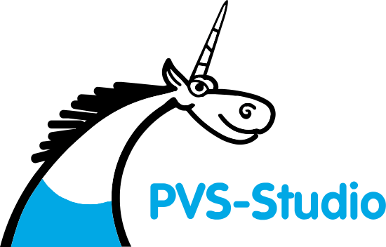
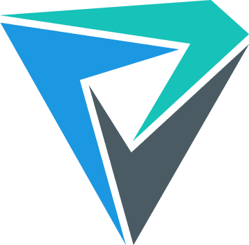

请访问原文链接：PVS‑Studio 8.00 for macOS, Linux & Windows - 代码质量安全静态分析 查看最新版。原创作品，转载请保留出处。
作者主页：sysin.org

C、C++、C# 和 Java 代码静态分析器
PVS‑Studio 是一款静态分析器，可保护代码质量、安全性 (SAST) 和代码安全
何时需要使用 PVS‑Studio 分析仪
对于开发者
- 开发过程中偶尔会出现错误
- 搜索错误时的调试工作很耗时
- 错误会进入版本控制系统
- 一旦错误被QA专家发现，调试那段代码将变得困难
对于管理者
- 由于存在bug，需要频繁地回到旧任务中
- 用户报告产品中存在错误
- 即使招聘了更多的开发者 (sysin)，也发现代码质量在下降
- 随着代码量的增加，很难评估其质量和可靠性
对于安全专业人士
- 外部代码审计困难
- 潜在客户要求使用这类工具
- 客户要求在开发中遵守安全和可靠性标准
您可以将 PVS‑Studio 集成到

IDE
- Visual Studio
- IntelliJ IDEA
- Rider
- CLion
- Visual Studio Code
- Qt Creator
- Eclipse
Distributed build
- Incredibuild
Game engines
- Unreal Engine
- Unity
Code quality
- SonarQube
- DefectDojo
Build systems
- MSBuild
- CMake
- Make
- Ninja
- Gradle
- Maven
- JSON Compilation Database
Embedded
- Keil µVision, DS-MDK
- IAR Embedded Workbench
- Platform.io
- QNX Momentics
- TI ARM Code Generation
Virtualization
- Docker
- WSL
CI
- Jenkins
- TeamCity
Cloud CI
- CircleCI
- Travis CI
- GitLab
- Azure DevOps
- GitHub Actions
支持的语言和编译器
Supported languages and compilers
Windows:
Visual Studio, C, C++, C++/CLI, C++/CX (WinRT)
MinGW C, C++
Texas Instruments Code Composer Studio, C6000-CGT, C, C++
Windows/Linux/macOS:
GNU Arm Embedded Toolchain, Arm Embedded GCC compiler, C, C++
CLion, Qt Creator, Eclipse, GCC, Clang, C, C++
IntelliJ IDEA (sysin), Android Studio, Java
Visual Studio, JetBrains Rider, C#, .NET Framework, .NET
Windows/Linux:
IAR Embedded Workbench, C/C++ Compiler for ARM C, C++
QNX Momentics, QCC C, C++
Keil µVision, DS-MDK, ARM Compiler 5/6 C, C++
Texas Instruments Code Composer Studio, ARM Code Generation Tools C, C++
MPLAB XC8 C
PVS‑Studio 是如何做到这一切的？

C 和C++ 源文件的预处理 （基于编译参数）允许扩展预处理器指令，即包含头文件并替换宏。分析器使用此功能来构建所分析代码的最完整的语义模型。

基于抽象语法树的基于模式的分析 在源代码中搜索与已知错误代码模式相似的片段。

方法注释 提供了有关所使用方法的更多信息 (sysin)，而不是仅通过分析方法签名即可获得的信息。

数据流分析 用于评估在处理各种语言结构时对变量值施加的限制。例如，数据流分析有助于评估变量在 if/else 块内可以采用的值。

类型 基于程序语义模型的 推断为分析器提供了有关代码中所有变量和语句的完整信息。

符号执行评估 可能导致错误的变量值，并对值的范围进行检查。

污染数据分析 检测应用程序使用未经验证的用户数据的情况。过度信任此类数据可能会导致漏洞（例如 SQLI、XSS、路径遍历）。

模块间分析 使诊断能够解释其他翻译单元中声明的函数。

软件组合分析 (SCA) 查找应用程序对包含漏洞的组件的依赖关系。
系统要求
Windows:
PVS-Studio works on Windows 11, Windows 10, Windows 8, Windows Server 2019, Windows Server 2016, and Windows Server 2012. PVS-Studio supports both 64-bit Windows and ARM architectures.
PVS-Studio requires .NET Framework version 4.7.2 or above (it will be installed during PVS-Studio installation, if it not present).
The PVS-Studio plugin can be integrated into Microsoft Visual Studio 2026, 2022, 2019, 2017, 2015, 2013, 2012, 2010 development environments. To analyze C and C++ code for embedded systems, the appropriate compiler should be installed on the system running the analyzer.
Linux:
PVS-Studio works under 64-bit Linux distributions with the Linux kernel versions 3.2.0 and later. To analyze C and C++ code for Linux, cross-platform applications, or embedded systems, the appropriate compiler must be installed on the system. To use the blame-notifier utility for notifying the development team, .NET Runtime 10.0 must also be installed.
The list of tested distributions where PVS-Studio is guaranteed to work:
- Arch Linux
- CentOS
- Debian GNU/Linux
- Fedora
- Linux Mint
- openSUSE
- Ubuntu
- And more…
macOS:
PVS-Studio supports Intel (x86-64) and Apple Silicon (arm64) processors in macOS 11.1 Big Sur and later. To analyze C and C++, the appropriate compiler must be installed on the system. To use the blame-notifier utility for notifying the development team (sysin), .NET Runtime 10.0 should be installed.
Java:
PVS-Studio for Java works under 64-bit Windows, Linux and macOS systems. Minimum required Java version to run the analyzer with is Java 11 (64-bit). A project being analyzed could use any Java version.
新增功能
PVS-Studio 8.00 更新内容
发布日期：2026 年 8 月 19 日
- PVS-Studio 8 这一重大版本引入了针对 JavaScript、TypeScript 和 Go 的新分析器。新增的 WebStorm 和 GoLand 插件可直接在 IDE 中使用这些分析器。Visual Studio Code 扩展也进行了大幅更新，现在支持 PVS-Studio 涵盖的所有编程语言。
- 现在使用基于 TOML 的新配置文件格式来配置新分析器、新 IDE 插件以及更新后的 Visual Studio Code 扩展。详情请参阅相关文档。
- 持续扩展对 MISRA C++ 2023 的覆盖范围。MISRA 组中现有的 16 条诊断规则已适配 MISRA C++ 2023 标准。有关 MISRA 支持的更多信息，请参阅相关文档。
- C 和 C++ 分析器现在支持 Linux 上的
x86_64-pc-linux-gnu-c++编译器。此外，在编译监控和编译跟踪模式下新增对 TI C2000-CGT 编译器的支持。 - PVS-Studio 插件现已支持 Qt Creator 20.x。已停止支持 Qt Creator 14.x。我们计划通过支持每个 Qt Creator 版本发布后两年内的最新插件版本来维持向后兼容性。
- Java 分析器现在可以正确处理使用
sourceSets的复杂构建结构项目。 - 新日志系统的实现工作正在进行中，旨在简化 PVS-Studio 分析器运行过程中出现的问题的数据收集 (sysin)。目前 C++ 分析器和 MSBuild C# 项目已支持扩展日志记录。详情请参阅相关文档。
- [重大变更] 对于 Unreal Engine 项目，
.pvsconfig文件中的//V_USE_OLD_PARSER标志现在会被忽略。新的 C++ 解析器已经足够完善，现已建议作为所有分析项目的默认解析器。现在，即使较旧版本的 Unreal Engine 项目的引擎源代码中仍包含//V_USE_OLD_PARSER标志，也会默认使用新的 C++ 解析器。 - [重大变更] Java 分析器现在会对 suppress 文件的内容进行排序。此次更新不会影响分析结果，但下次更新受版本控制的 suppress 文件时，可能会导致文件内容发生较大变化。
- [重大变更] 诊断规则 V2558 和 V547 针对特定情况更新了提示信息。此前被抑制的警告可能会重新出现在分析报告中。
- [重大变更] 由于 Visual Studio Code 扩展进行了重大修改以支持新的 PVS-Studio 分析器，使用该扩展所需的最低 Visual Studio Code 版本从 1.74（2022 年 11 月）提升至 1.100（2025 年 4 月）。
- V6136。位标志的值重复。
- V5801。OWASP。代码包含可能改变其逻辑的不可见字符。建议在代码编辑器中启用不可见字符显示。
- V5901。OWASP。代码包含可能改变其逻辑的不可见字符。建议在代码编辑器中启用不可见字符显示。
- V7001。二元运算符的操作数相同。
- V7002。一个函数的函数体与另一个函数的函数体完全相同。
- V7003。条件与
else if语句中的条件相同，导致该语句无法执行。 - V7004。
then语句与else语句相同 (sysin)。 - V7005。变量被赋值给自身。
- V7006。创建了异常但从未使用。可能缺少
throw关键字。 - V7007。
|和&运算符绕过短路求值。即使左操作数为 false，右操作数仍会被求值。 - V7008。两个或多个
case分支执行相同的操作。 - V7009。函数、构造函数或方法中的参数未被使用。
- V7010。函数的返回值必须被使用。
- V7011。与
NaN的比较不正确。应改用isNaN()或Number.isNaN()方法。 - V7012。条件表达式始终返回相同的值。
- V7013。条件中存在可疑赋值。可能原本 intended 是进行比较。
- V7014。复合赋值运算符左右两侧的表达式相同。
- V7015。赋值运算符和一元运算符的格式可疑。
- V7016。在循环中通过常量索引访问集合元素存在可疑情况。
- V7017。内部循环中未使用循环计数器进行集合索引。
- V7018。表达式
A || (A && B)是冗余的，其结果始终为A。 - V7019。同一个变量被用作内部循环和外部循环的计数器。
- V7020。代码格式可疑。可能缺少花括号。
- V7021。后缀递增或递减操作没有效果，因为变量随后被覆盖。
- V7022。此
else分支可能应该属于前一个if语句。 - V7023。在相似代码片段中可疑地使用了某个变量。可能存在拼写错误，原本可能 intended 使用另一个变量。
- V7024。在一系列相似比较中存在可疑的子表达式。
- V7025。后续条件中可能应该检查某个已赋值的变量。请检查是否存在拼写错误。
- V7026。
if、for或while语句条件后存在多余的分号。 - V7027。对象作为参数传递给了自身的方法。
- V7028。使用了用户定义的数学常量，而不是内置常量。由此产生的值可能不准确。
- V7029。该行可能未被正确注释，导致控制流发生改变。
- V7030。代码格式可疑。可能缺少
else关键字。 - V7031。在
switch语句中发现可疑标签。可能存在拼写错误，原本可能 intended 使用另一个标签。 - V7032。循环计数器与其自身的初始值进行比较 (sysin)。
- V7033。存在可疑的相似比较。表达式中可能存在拼写错误。
- V7034。子类中的方法没有重写或实现祖先类的方法。子类方法名称可能存在拼写错误。
- V7035。属性实现可疑。可能应该返回或赋值给另一个字段。
- V7036。存在可疑的精确比较。考虑使用具有指定精度的比较。
- V7037。嵌套循环的计数器使用外部循环的计数器进行初始化。
- V7038。循环条件可能不正确。循环的条件和更新表达式使用了不同的变量。
- V7039。检测到无法到达的代码。控制流永远不会执行到此语句。
- V7040。检测到无限递归。
- V8001。
foo运算符左右两侧的子表达式相同。 - V8002。变量被赋值给自身。
- V8003。建议检查该表达式。此处可能应该使用
-=``、+=或!=` 中的某个运算符。 - V8004。检测到
if A {...} else if A {...}模式。可能存在逻辑错误。 - V8005。
then语句与else语句相同。 - V8006。循环中存在无条件的
break/continue/return/goto。 - V8007。在未延迟执行的匿名函数中调用
recover函数无法从 panic 中恢复执行。 - V8008。在循环中通过常量索引访问集合元素存在可疑情况。
- V8009。两个或多个
case分支执行相同的操作。 - V8010。两个或多个
case分支具有等效表达式。 - V8011。复合赋值运算符左右两侧的表达式相同。
- V8012。函数始终返回相同的值。请检查程序逻辑。
- V8013。格式不正确。预期的格式项数量不同。
- V8014。两个
if语句具有相同的条件。第一个if语句包含函数返回操作，使第二个if语句变得多余，或者代码中存在逻辑错误。 - V8015。对位运算 XOR 运算符
^的使用可疑。此处可能原本 intended 使用幂运算。 - V8016。循环可能执行不正确，或者其条件永远无法满足。请检查
for循环的初始值和最终值。 - V8017。两个相邻
if语句的条件相同。 - V8018。与
math.NaN()的比较没有意义。应改用math.IsNaN()函数。 - V8019。
case表达式列表中指定了两个或多个等效表达式。 - V8020。重复检查。该条件已在前一行进行验证。
- V8021。多次使用一元运算符没有意义，或者会反转结果。
- V8022。函数或方法中的参数未被使用。
- V8023。可能检查了错误的
error类型变量是否为nil。 - V8024。冗余的类型断言。变量的类型已经包含通过类型断言检查的类型。
- V8025。类型 switch 中的
case无法到达。之前的case已经涵盖了此类型。 - V8026。嵌套循环的循环计数器未在循环体中使用。
- V8027。在一系列相似比较中存在可疑的子表达式。
- V8028。外部循环计数器在内部循环的后置语句中被修改。内部循环可能应该修改内部循环计数器。
- V8029。外部循环计数器用于内部循环的条件。内部循环可能应该使用内部循环计数器。
- V8030。外部循环计数器用于内部循环的初始化语句。可能应该使用其他变量作为计数器。
- V8031。使用
len函数调用结果作为索引将导致越界一位（off-by-one）错误。 - V8032。函数的返回值必须被使用。
- V8033。发现两个相似的代码片段。第二个代码片段可能包含拼写错误。
- V8034。传递给函数的参数顺序可能不正确。
- V8035。类型断言始终为 false。检查类型断言中使用的接口，因为它们包含签名不兼容的方法。
- V8036。与无符号类型变量进行的比较没有意义。
- V8037。同一个参数被多次传递给函数。可能原本 intended 使用不同的参数。
- V8038。参数在函数体中使用之前始终会被重新赋值。
- V8039。用于标识元素的值中存在可疑的前导或尾随空格。
- V8040。变量的值在使用之前已被覆盖。
更多细节请参阅官方文档。
下载地址
仅保留最新版。
PVS‑Studio 8.00 for macOS (2026-08-19)
PVS‑Studio 8.00 for Linux (2026-08-19)
PVS‑Studio 8.00 for Windows (2026-08-19)
相关产品：Gartner 应用程序安全测试 (AST) 魔力象限 2025
更多：HTTP 协议与安全

文章用于推荐和分享优秀的软件产品及其相关技术，所有软件提供免费版或试用版。内容若侵犯了您的版权，请联系作者删除。如果您喜欢这篇文章，或者觉得它对您有所帮助，亦或发现有不当之处；欢迎发表评论，也欢迎分享这个网站，或者赞赏一下，谢谢！提示：捐赠或赞赏属于自愿赠予行为，提交后即表示您对作者的支持与认可。为避免误操作，请在确认前仔细检查金额，支付完成后将无法撤销或退还。
 支付宝赞赏
支付宝赞赏  微信赞赏
微信赞赏赞赏一下
敬请注册！点击 “登录” - “用户注册”（已知不支持 21.cn/189.cn 邮箱）。 请勿使用联合登录（已关闭）。